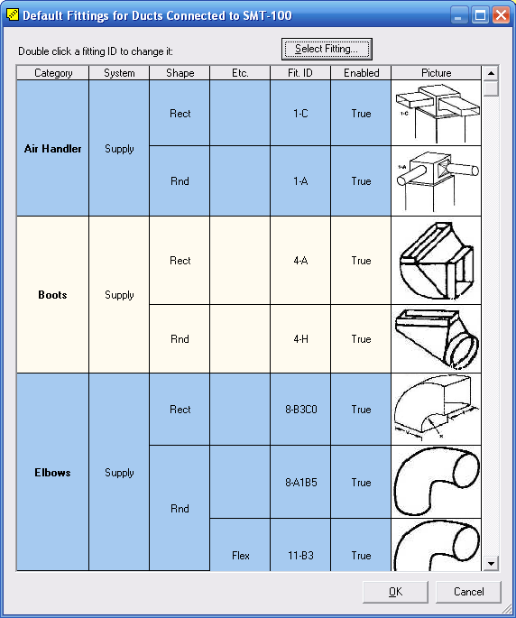

Default Fittings (Manual D Ductsize) |
  
|
Default Fittings (Manual D Ductsize) |
|
To open this dialog: Right click a duct, then click General Duct Settings, then click Duct Defaults for this System, then click the "Default Fittings for this Scenario" button.
This dialog is where you define the default fittings that will be assigned to ducts at certain times. These settings apply only to ducts that have their Auto Assign Fittings property set to True. If you want to manually assign fittings to a duct, first set its Auto Assign Fittings property to False in the Object Properties window, then click the button beside its Fittings property.
Scroll down below this picture for more information.

The following table lists the events that trigger the automatic assignment of the various categories of fittings.
Category |
When Applied |
Air Handler |
·Upon creation ·Shape property is changed
|
Boots |
·Upon creation ·Shape property is changed
|
Elbows |
·Upon creation ·Shape property is changed ·Add Bend command is executed ·Remove Bend command is executed ·Show As Flex Duct property is changed
|
Takeoffs |
·Duct is plugged into the side of a trunk
|
Junctions |
·Duct is plugged into the downstream end of a trunk ·Show As Flex Duct property is changed |